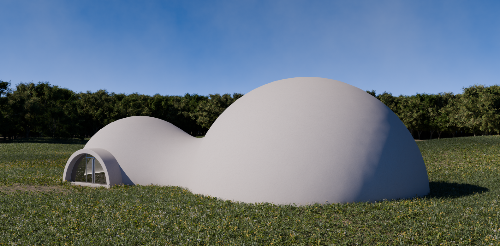

Центр воспоминаний MRC (Memory Recurrence Center) — пространство для
самостоятельной
рефлексии и проживания детских
воспоминаний.
Все существующие способы фиксации воспоминаний необъективны. Они «перезаписывают» воспоминания,
используя другой медиум,
что приводит к искажению воспоминаний. Инструмента, который позволял бы переносить воспоминания
в материальный мир без
искажения, не существует. MRC отказывается от существующих способов фиксации воспоминаний и предлагает
новый подход.
Цель центра — материализовать воспоминания, не искажая их. MRC использует звук как материал для
воссоздания
воспоминаний. Одни из ключевых черт воспоминания — перспективность и нестабильность. MRC учитывает эти
особенности,
и поэтому дает человеку контроль над звуком.
Memory Recurrence Centre manifesto
Память
1. Память – полноценный и автономный способ фиксации реальности
2. Память производит и хранит воспоминания
3. Память фиксирует реальность искаженно
Воспоминания
1. Воспоминания содержат в себе информацию из всех органов чувств субъекта: звук, изображение, запах и
т.д.
2. Воспоминания перспективны
3. Воспоминания эфемерны и лабильны
4. Воспоминания нестабильны
5. В истинной форме воспоминания могут существовать только в памяти
Воспоминания не могут быть объективно зафиксированы с помощью других медиумов (например, фотографии)
MRC
1. Центр отказывается от существующих способов фиксации воспоминаний
2. Центр – инструмент для прочтения воспоминаний
3. Центр взаимодействует напрямую с источником воспоминаний – памятью
Чтобы услышать прошлое, настоящее должно молчать.

Регистрация